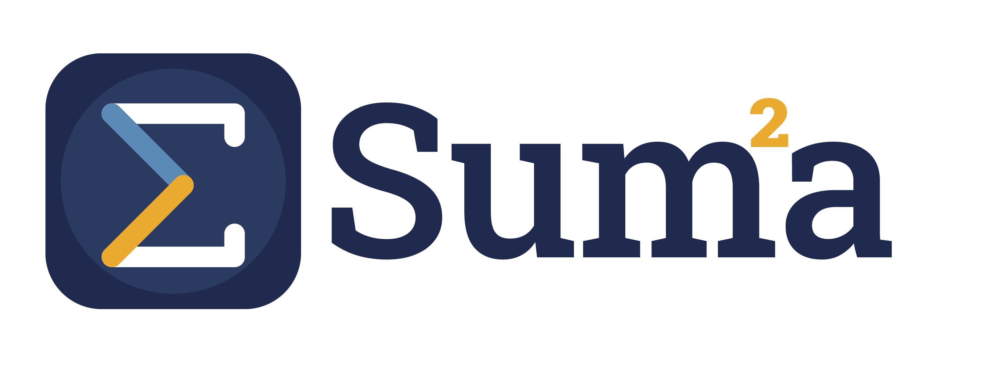

01 · Gestiona Docente
Notas · 3.º B Matemática
Pérez, Ana18
Díaz, Luis15
Mora, Sofía19
Guardado ✓ · auditado
Toma el control de tu institución. Todo — academia, dinero y familias — en un solo lugar, en vivo.
Los datos viven en todas partes y en ninguna. Cuando la información llega, ya es tarde.
Cuadernos, Excel y WhatsApp: los datos en seis lugares y nadie ve la institución completa.
El representante descubre el bajo rendimiento en el boletín, sin margen para corregir.
El docente gasta +6 horas por semana en planillas, no en enseñar.
Se va la luz o el internet y los sistemas tradicionales dejan de funcionar.
Control de estudios, administración, comunicación con las familias y bienestar — integrados, auditables y alineados al MPPE.
Los módulos que viste comparten un mismo recorrido: cualquier dato —una nota, un pago, una inasistencia— se gestiona, se comunica y mejora.
Míralo con los datos de tu institución.
Solicitar demostración →Le habla al que decide la compra, al que la usa cada día — y demuestra por qué es un sistema actual.
Sabes qué grado, qué docente o qué cobranza necesita tu atención hoy — con la foto completa de la institución en una sola pantalla.
Carga notas y asistencia desde el teléfono, en segundos. Se acabó la planilla de siempre.
Notas, alertas y solvencia de su representado, en vivo — sin sorpresas en el boletín.
Funciona sin internet, nunca se tacha (se rectifica con un registro nuevo) y queda todo alineado al MPPE.
Seguimos a Ana, estudiante de 3.º B en Matemática, durante un lapso completo — mira cómo Summa detecta el riesgo y ayuda a corregirlo a tiempo. Ejemplo ilustrativo
No vendemos un software cerrado. Toca una institución y mira cómo la misma plataforma se vuelve suya — al instante, sin programador.
La migración de tus datos es nuestro trabajo, no el tuyo. Te entregamos la institución poblada y estructurada; tú la verificas y la activas.
Cargamos tu estructura, grados, secciones y matrícula a partir de lo que ya tienes.
Revisas que todo esté correcto, con tu gente que conoce la institución.
Abres el período y Summa queda operando — sin meses de implementación.

= el resultado.Agenda una demostración y mira cómo Summa integra, gestiona y mejora la experiencia académica de tu institución.